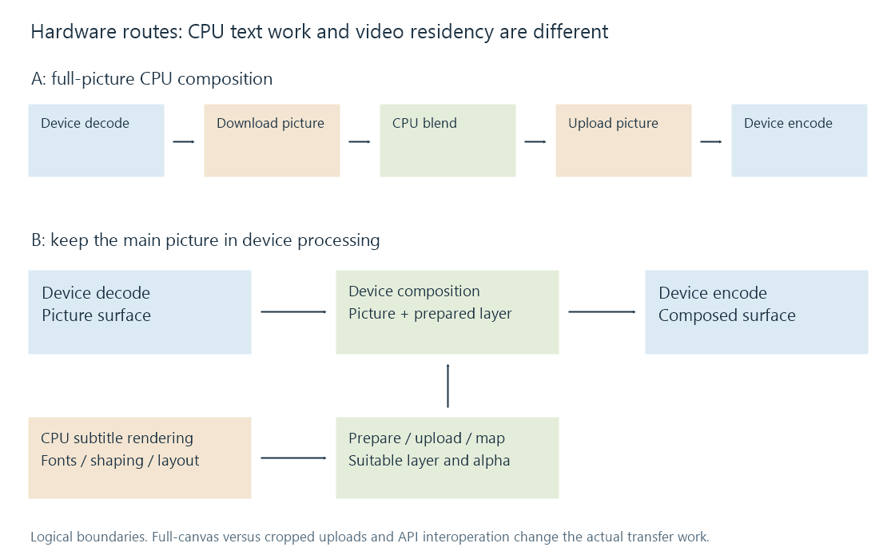

Hardware subtitle overlay pipeline
A hardware subtitle pipeline separates codec engines, CPU text preparation, device composition and memory transfers; accepted formats and timed image updates determine the usable route.
“Hardware transcoding” can describe only some stages in a subtitle pipeline. Video decoding, text rendering, image composition and video encoding need separate descriptions.
A device video decoder may reconstruct pictures while the CPU resolves fonts and rasterizes text. A device compositor can then blend the prepared layer into those pictures. Another route downloads each picture for CPU composition and uploads the result before hardware encoding.

Move the picture or move the layer
The first route moves the full picture across the CPU/device boundary:
Device decode → picture download → CPU composition → picture upload → device encode.
The second can keep the picture in device memory:
Device decode → device composition → device encode, with a separate CPU subtitle render → layer preparation/upload branch.
The second route still has CPU work. It can reduce frame-sized transfers without making font selection, shaping or every subtitle conversion a GPU task.
Device mapping or shared memory can change how a boundary is implemented. The diagrams show logical residency transitions; they do not assert a physical bus copy for every mapping on every system.
Payload sizes expose the difference
For tightly packed, 8-bit 4:2:0 NV12 at 3840 × 2160, the ideal picture payload is:
3840 × 2160 × 1.5 = 12,441,600 bytes.
At 24 pictures per second, moving that amount once per picture is 298,598,400 bytes/s. A download and upload of the same ideal payload total 597,196,800 bytes/s, before pitch padding, synchronization, extra copies or bus overhead.
| Prepared object | Ideal payload |
|---|---|
| 3840 × 2160 NV12 video picture | 12,441,600 bytes |
| 3840 × 2160 P010 video picture in 16-bit storage | 24,883,200 bytes |
| 3840 × 2160 RGBA subtitle canvas, 4 bytes/pixel | 33,177,600 bytes |
| 800 × 80 RGBA subtitle object, 4 bytes/pixel | 256,000 bytes |
A small visible sentence does not prove that only 256,000 bytes are uploaded. The renderer/converter may produce a full-size transparent canvas. Uploading that RGBA canvas at 24 updates/s would be 796,262,400 bytes/s in this ideal calculation, greater than the one-way NV12 picture payload.
A cropped-object route needs a supported image size and position model. A full-canvas route has different costs. These are payload calculations, not measured throughput, and compression rates do not reduce the size of decoded picture samples.
Accepted device formats govern the join
The device compositor must accept both representations. The examined CUDA overlay pairs NV12 with NV12, or YUV420P with YUV420P/YUVA420P. The examined Vulkan overlay requires matching underlying software formats. OpenCL operates through its own image and alpha-plane handling.
That is why a CPU renderer's RGBA layer cannot be assumed to join any hardware-decoded surface unchanged. The route needs suitable conversion, transparency and colour treatment, then a valid device context.
Moving between APIs on the same physical GPU is another interface boundary. A CUDA, Vulkan or OpenCL object is not interchangeable merely because it names that device. Supported interoperation, mapping or transfers must establish a usable representation and completion order.
The individual CUDA, Vulkan and OpenCL pages describe the dated source interfaces in more detail.
Sparse cues and changing layers have different costs
A stationary caption can retain one rasterized appearance for many video pictures if the graph supports reuse. Composition still occurs for each output picture while the cue is active, but text shaping and an upload need not necessarily repeat for every picture.
A moving anchor, fade or karaoke highlight changes the layer over time. The renderer or another stage must evaluate that changing presentation at the required picture times. Holding one image for the full event changes the result.
The subtitle branch must also handle clear intervals, seeks and new events. Repeating a previous layer after its end can leave a stale caption on the screen. A useful route description therefore includes image-update policy and timing alongside device residency.
Throughput and latency answer different questions
Consider an invented three-stage model taking 8 ms to decode, 12 ms to prepare/compose and 7 ms to encode each picture. If those stages serialize, the per-picture work totals 27 ms.
With independent stage resources, adequate buffering and no other limits, steady-state throughput is instead bounded by the slowest stage: one picture every 12 ms. An individual picture still passes through all three stages. Pipelining improves throughput without removing its end-to-end work or queueing.
Real stages can contend for memory or the same device resources. Extra transfer waits can also dominate. Increasing encoder speed alone cannot resolve a bottleneck in text preparation, composition or transfer.
The actual Emby app/server/tool combination and selected graph establish the available route. The public 5.1-emby_2023_06_25_u1 source and SDK pipeline information explain designs and stage descriptions; these payload and timing models are not hardware performance measurements.
See Also
- Subtitle overlay pipeline fundamentals
- Software subtitle overlay
- OpenCL subtitle overlay
- CUDA subtitle overlay
- Vulkan subtitle overlay
- NV12 Pixel Format
- P010 Pixel Format